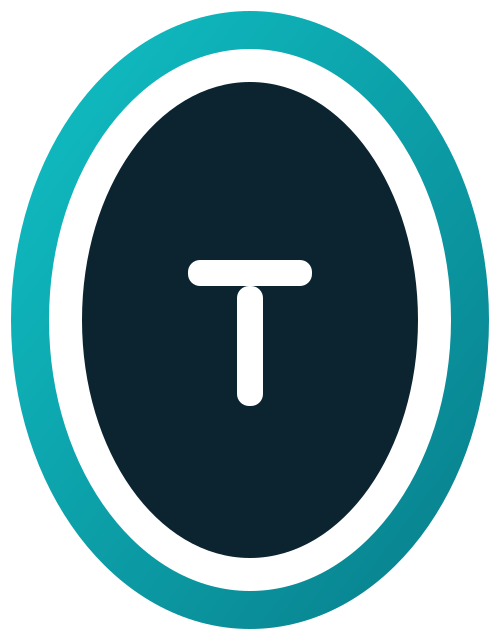

Sistema Web de Gerenciamento de Tarefas
Python Flask SQLAlchemy SQLite HTML CSS PT / EN
Pedro Albuquerque
Uma aplicação web para organizar tarefas do dia a dia, com foco em simplicidade, clareza visual e boa experiência de uso.
Criar, editar e concluir tarefas com prioridade, prazo, tags e anexos.
Buscar, filtrar, ordenar e paginar para achar qualquer tarefa rápido.
Dashboard, alertas de atraso e lembretes automatizados.
Criar, listar, editar e excluir tarefas.
Alta / média / baixa, com alerta de atraso e vence hoje.
Alterna entre pendente e concluída.
Etiquetas por tarefa e filtro por tag.
Upload e download de arquivos na tarefa.
Por texto, status, prioridade e ordenação.
CRUD completo de tarefas para integrações.
Avisos de tarefas atrasadas por SMTP (ou console).
Total, pendentes, concluídas e atrasadas.
Interface em Português e Inglês (i18n próprio).
Jinja2 + CSS
Rotas + API
ORM
tasks.db
Framework web leve para Python.
ORM e banco relacional sem configuração.
Traduções em i18n.py, sem dependências extras.
| Entidade | Campos principais | Relação |
|---|---|---|
Task |
title, description, priority, status, due_date, created_at, updated_at | Centro do sistema |
Tag |
name | N:N com Task |
Attachment |
filename, stored_name, created_at | N:1 com Task |
is_overdue (atrasada) e is_due_today (vence hoje).
| Rota | Método | Descrição |
|---|---|---|
/ |
GET | Página inicial |
/tasks |
GET | Lista, busca, filtros e paginação |
/create |
GET POST | Criar tarefa |
/edit/<id> |
GET POST | Editar tarefa |
/toggle/<id> |
POST | Concluir / reabrir |
/reminders |
GET POST | Enviar lembretes |
/api/tasks |
GET POST PUT DELETE | API REST de tarefas |
?lang=pt ou ?lang=en para trocar o idioma.
Alternância no topo, preferência salva no navegador.
Troca imediata; idioma guardado na sessão.
Menu colapsável e caminho de navegação.
Skip link, foco visível, ARIA e feedback por mensagens.
unittest, banco temporário, cobrindo CRUD, filtros, idioma e API.
Estatísticas do dashboard em uma única query agregada.
Dúvidas?
Python Flask SQLAlchemy PT / EN